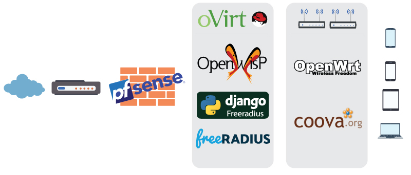
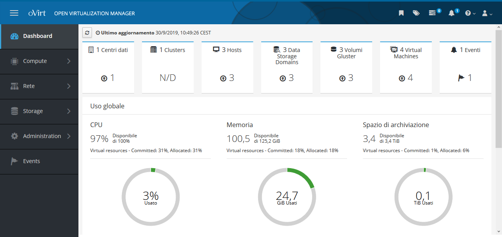
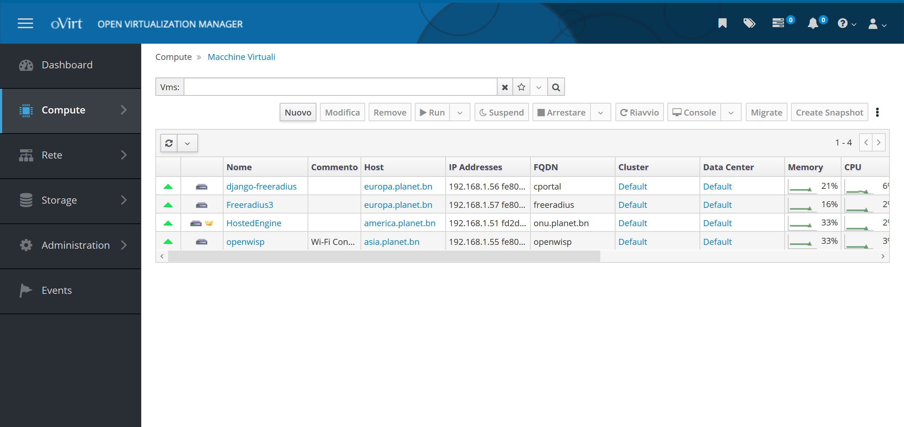

Le componenti
 Per far fronte a tutte le nostre esigenze in modo scalabile, versatile, e sicuro è stato scelto pfSense per garantire la sicurezza e gestire i DNS (tramite BIND9) così da avere per ogni servizio gli FQDN (talvolta obbligatoriamente) adeguati e oVirt come sistema di virtualizzazione per poterci installare tutte le VM necessarie.
 
2.1 OpenWisp
OpenWISP è un progetto nato per permettere una semplice gestione di rete e permettere l’automazione sotto diversi aspetti come:
- Auto configurazione dei nodi
- Creazione di tunnel VPN
- Inizializzazione di access point WiFi in modo centralizzato
- Configurazione di reti mesh
- Configurazione di ogni rete supportata da OpenWRT
L'applicazione server-side è modulare, estensibile, programmabile e configurabile. I moduli sono sviluppati con Django, un ricco ecosistema di componenti riutilizzabili soprattutto per applicazioni di rete.
Al momento solo OpenWRT è completamente supportato per uso in produzione, ma in modo sperimentale è disponibile anche il backend per Ubiquiti AirOS. Inoltre, l'engine permette la scrittura di configurazioni personalizzate su tutti gli OS di rete che supportano le configurazioni remote.
Il sistema è caratterizzato da due parti:
OpenWISP Controller, motore che genera configurazioni per router e dispositivi di rete utilizzando Python e NetJSON. La gestione è permessa grazie ad un interfaccia Web che permette la gestione della rete fornendo funzionalità di:
- Registrazione degli apparati automatica
- Mappe geografiche per posizionamento Indoor e Outdoor
- VPN e certificati x509
- Topologia di rete
- RADIUS manager: django-freeradius
- IP & subnet administration: django-ipam
- Sistemi di controllo
- Aggiornamento Firmware
OpenWRT package, pacchetto installabile su OpenWRT per permettere la sincronizzazione con il controller
2.2 OpenWRT
Il progetto OpenWrt è un sistema operativo Linux destinato a dispositivi embedeed. Invece di provare a creare un singolo firmware statico, OpenWrt fornisce un filesystem completamente scrivibile con gestione dei pacchetti. Questo libera dalla selezione e dalla configurazione dell'applicazione fornite dal venditore e consente di personalizzare il dispositivo attraverso l'uso di pacchetti per adattarsi a qualsiasi applicazione.
Per gli sviluppatori, OpenWrt è il framework per creare un'applicazione senza dover creare un firmware completo al suo interno; per gli utenti ciò significa la possibilità di personalizzazione completa, permettendo di adattarlo secondo le proprie esigenze.
OpenWRT ad oggi è supportato da oltre 1000 device. Consultando il sito del progetto è possibile verificarne la compatibilità e la procedura per sostituire il firmware stock.
2.3 FreeRADIUS
FreeRADIUS è la più popolare implementazione open-source del protocollo RADIUS. Permette l’autenticazione, l’autorizzazzione e l’accounting. Nel nostro caso a stretto contatto con django-freeradius autorizzerà la navigazione ad internet dopo essere passati dal nostro captive portal.
2.4 Django-Freeradius
E’ un’interfaccia web per gestire il database FreeRADIUS basata su Django. Necessaria per integrare le funzionalità di FreeRADIUS per poter gestire l’autorizzazione, la post autenticazione e l’accounting tramite API RESTful. Inoltre in questo caso è necessario per permettere la verifica tramite social grazie all’integrazione del modulo django-allauth.
2.5 CoovaChilli
CoovaChilli è un controller ricco di funzionalità che fornisce la possibilità di attivare un Captive Portal così da garantire l'accesso tramite protocollo RADIUS o HTTP permettendo l'access provisioning e l'accounting. Questo controller è fruibile come package per Openwrt oppure è parte integrante del firmware CoovaAP. Questo package sommato a Freeradius e Django-freeradius permetterà di raggiungere il nostro obbiettivo.